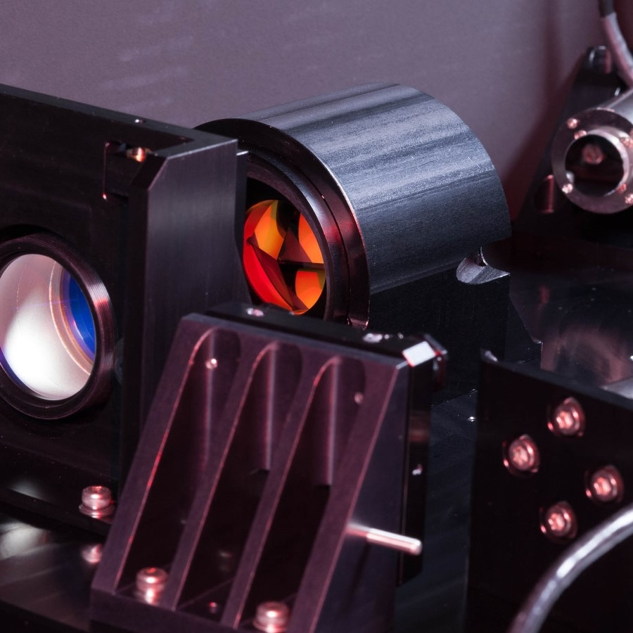

Hi, I'm Jayke Samson Nguyen
Ph.D. Candidate @ UCSD A&A Department
I study exoplanets and protoplanetary disks through ground-based direct imaging. I'm an instrumentalist by trade working on the full stack of high-contrast imaging with adaptive optics; both building and using the instruments and developing post-processing techniques for analyzing the data. I also work on the Gemini Planet Imager 2.0.
Research
Direct Imaging of Exoplanets in the Mid-IR
I'm looking for exoplanets in the mid-IR (>4.7 µm). Planets at these wavelengths are older and colder than the current population of planets we've directly imaged.
The Pyramid Wavefront Sensor Upgrade of GPI 2.0
I helped build the new pyramid wavefront sensor going into the Gemini Planet Imager 2.0. I worked on integrating the movable mirrors, needed to direct the beam through the wavefront sensor.

GPI 2.0 AO Simulations
I've developed AO simulations of the new AO system on GPI 2.0 using HCIpy. The simulations were designed to test performance and efficacy of the upgrades to the system.
Code
Dyre
A tool for dynamically displaying plots locally or remotely.
Flashplot
A bare-bones drop-in replacement for plt.plot and plt.imshow that uses PIL for high-speed rendering
Rain
Re-implementation of Drizzle, meant for performing the distortion correction solution for imaging systems.
Parallelize
An easy way of parallelizing functions that are performing mutually independent operations.
Target Selection Tool
Generates plots of observing targets and their visibility in the sky at a given date.
Community Service/Outreach
Astro On Tap, San Diego
I'm currently one of the hosts for Astronomy on Tap in San Diego! AoT is a bi-monthly event that provides free, public talks about astronomy and astrophysics in a brewery.
Cohort Program
I'm currently a mentor for the Cohort program, a program for providing group mentorship for students at all stages throughout their undergraduate careers.
Astro Graduate Council
I was the founding president (2021-2023) of the Astro Graduate Council, a student organization for representing graduate students within the A&A department.
Akamai Workforce Initative
I previously was an instructor for the Akamai program. With a small team, I helped design a day-long STEM project to teach fundamental engineering skills to undergraduate researchers beginning their research careers.